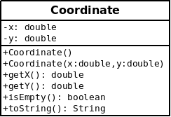
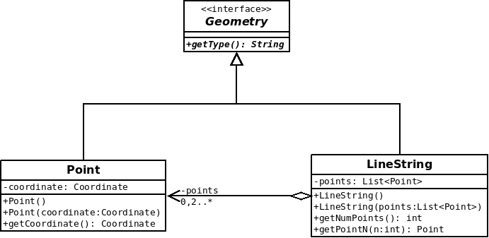
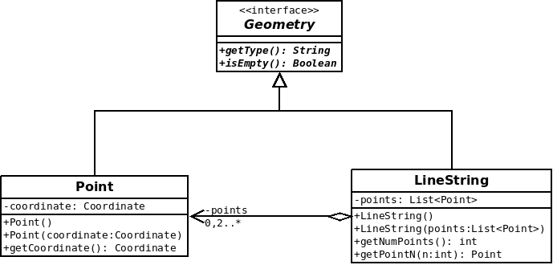
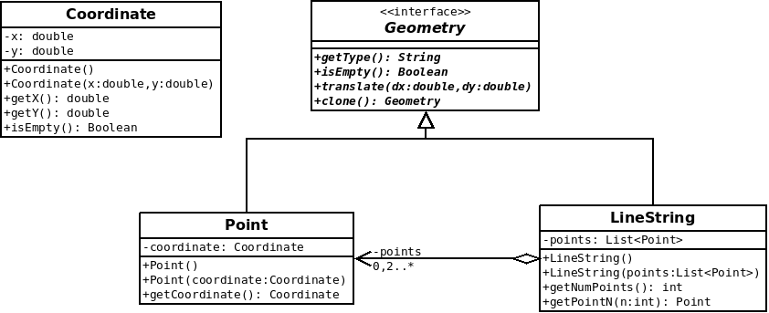
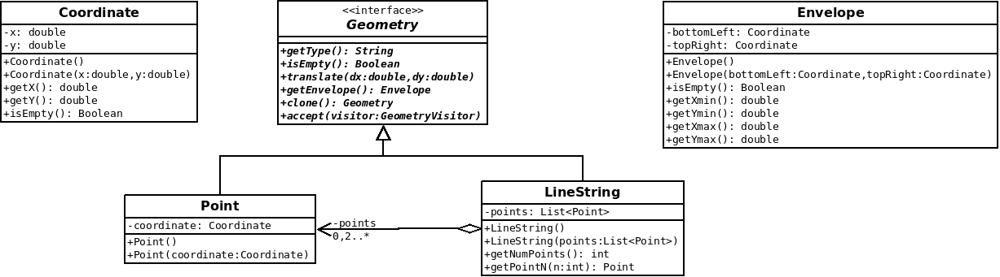
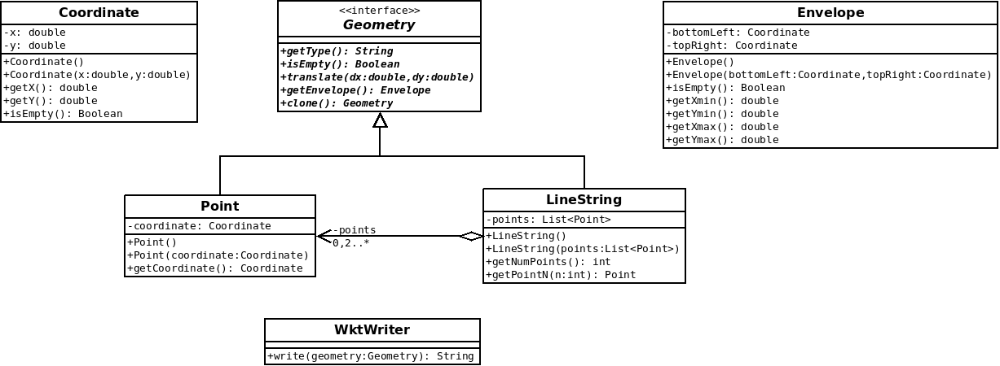
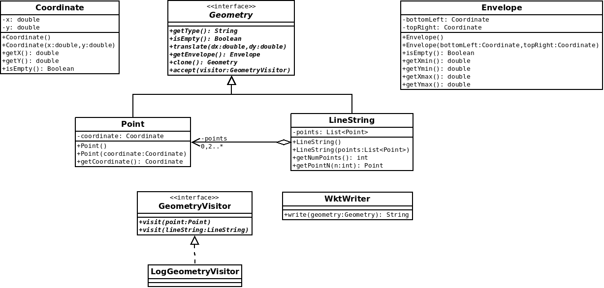
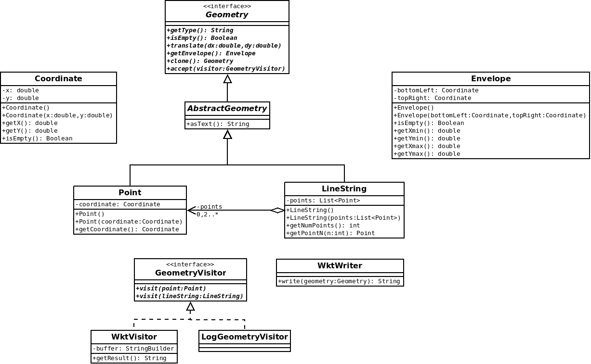
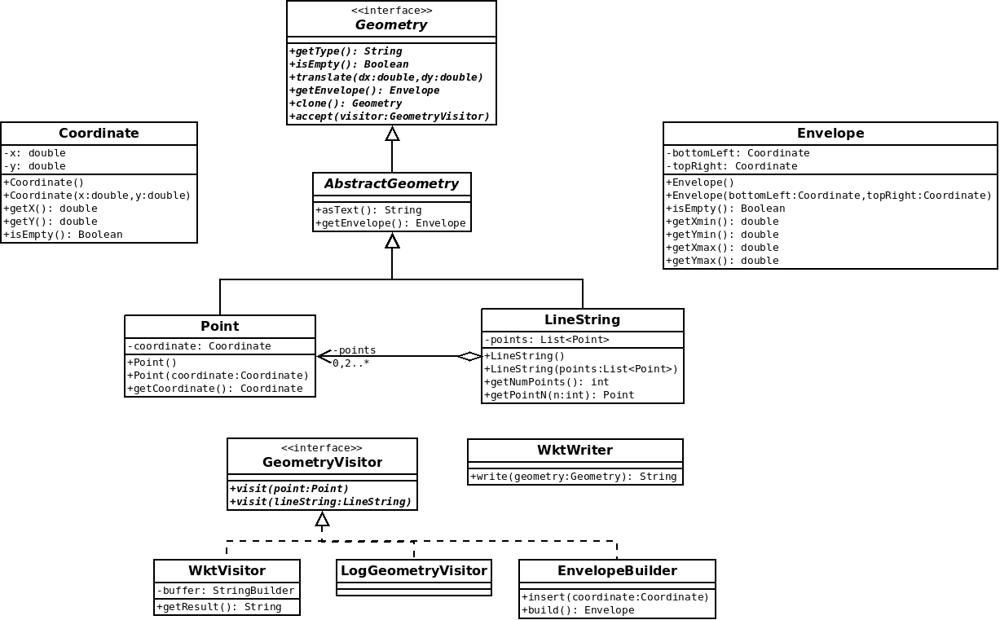
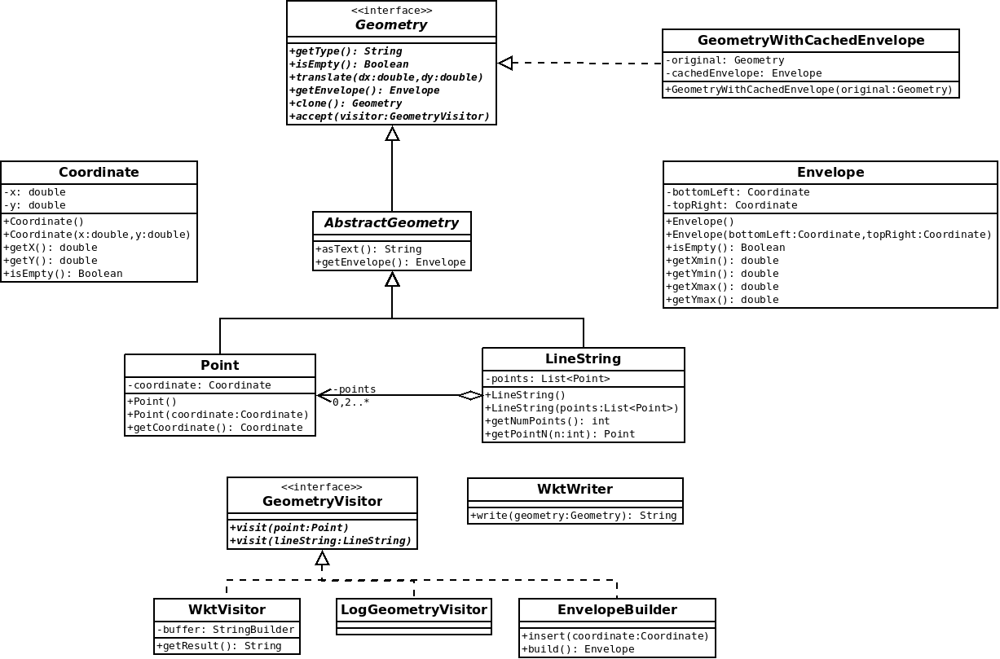

TP - Mise en oeuvre des patterns sur des Geometry
- Introduction
- Démarrage
- 0.1 - Coordinate (2D)
- 0.2 - Geometry, Point et LineString
- 0.3 - Geometry.isEmpty()
- 0.4 - Geometry.translate(dx,dy)
- 0.5 - Geometry.clone()
- 0.6 - Envelope et EnvelopeBuilder
- 0.7 - Geometry.getEnvelope() : Envelope
- 0.8 - WktWriter
- 0.9 - GeometryVisitor
- 0.10 - WktVisitor
- 0.11 - Geometry.asText()
- 0.12 - EnvelopeBuilder en tant que GeometryVisitor
- 0.13 - GeometryWithCachedEnvelope
- 0.14 - GeometryListener
- 0.15 - GeometryCollection
- 0.16 - Interface GeometryWriter, classe WktWriter et GeoJSONWriter
- 0.17 - GeometryWriterFactory
- 0.18 - GeometryVisitor renvoyant un résultat
- 0.19 - Extraction de asText()
- 0.20 - MathTransform pour des transformation plus générique
- 0.21 - Finaliser une version potable
- Aller plus loin...
Introduction
L'objectif de ce TP est de s'exercer à mettre oeuvre des patrons de conception via la création d'une petite bibliothèque de manipulation des géométries OGC :

ATTENTION : Dans la vraie vie, vous utiliserez plutôt des bibliothèques du type JTS
Démarrage
- Cloner le projet https://github.com/mborne/tp-pattern-geometry
mkdir ~/workspace_pattern
cd ~/workspace_pattern
git clone https://github.com/mborne/tp-pattern-geometry.git
cd tp-pattern-geometry
# vérifier que vous êtes bien sur la branche "initial"
git branch- Importer le projet maven dans eclipse
(Au cas où, voir Configuration eclipse/maven avec un proxy)
0.1 - Coordinate (2D)
Objectif : Préparation du TP, principe de base, encapsulation
Création d'une classe Coordinate permettant de représenter une position en 2D à l'aide d'un couple x,y.

Remarques :
- On initialisera dans un premier temps les coordonnées à
(0.0, 0.0)dans le constructeur par défaut - On soulignera le caractère immuable de cette classe (une fois construite, une coordonnées ne peut être modifiée)
0.2 - Geometry, Point et LineString
Objectif : Préparation du TP, utilisation d'interface, encapsulation
Implémenter les trois classes suivantes illustrées sur le schémas ci-après :

0.3 - Geometry.isEmpty()
Objectif : Bonne pratique NonNullObject
Dans la question précédente, nous remarquons que nous avons des choix à faire dans les constructeurs par défaut de Point et LineString.
Afin d'éviter d'avoir à tester des coordinate ou points null, nous allons ajouter le concept de géométrie vide et de coordonnées vide à l'aide de NaN :
- 1) Modifier le comportement du constructeur par défaut de Coordinate pour initialiser
xetyàDouble.NaN - 2) Ajouter une méthode
Coordinate.isEmptyà l'aide deDouble.isNaN(x) - 3) S'assurer que la variable membre
coordinatedePointest jamais nulle. - 4) S'assurer que la variable membre
pointsdeLineStringest jamais nulle (on préfère une liste vide à une valeur nulle). - 5) Ajouter
Geometry.isEmpty

0.4 - Geometry.translate(dx,dy)
Objectif : Exploiter une interface pour réaliser un traitement spécifique
Ajouter une méthode de permettant de translater une géométrie.

0.5 - Geometry.clone()
Objectif : Patron de conception Prototype
En introduisant la fonction précédente, nous avons renoncé à l'idée d'avoir des géométries non modifiable après construction (immutable). Nous allons donc ajouter une méthode permettant de récupérer une copie d'une géométrie.
Ceci permettra par exemple à un utilisateur de copier la géométrie avant de la modifier
/*
* copie sans connaissance du type réel
* (sans cela, on devrait faire un traitement particulier pour Point,
* LineString, etc.)
*/
Geometry copy = g.clone();
copy.translate(10.0,10.0);
//... "g" n'est pas modifiée
0.6 - Envelope et EnvelopeBuilder
Objectif : Patron de conception Builder
Nous souhaitons calculer l'emprise d'une géométrie (la bbox). La logique de calcul de min/max en oeuvre étant assez complexe, nous ne souhaitons pas l'implémenter dans les classes Point et LineString.
Nous allons donc procéder comme suit :
- Ajouter une classe
Envelopereprésentant une emprise rectangulaire de la géométrie - Ajouter une classe utilitaire
EnvelopeBuilderqui aura pour rôle de construire cette emprise

Exemple d'utilisation :
EnvelopeBuilder builder = new EnvelopeBuilder();
builder.insert(new Coordinate(0.0,1.0));
builder.insert(new Coordinate(2.0,0.0));
builder.insert(new Coordinate(1.0,3.0));
Envelope result = builder.build();0.7 - Geometry.getEnvelope() : Envelope
Objectif : Facade sur EnvelopeBuilder
Ajouter une méthode getEnvelope à la classe Geometry.

0.8 - WktWriter
Objectif : Mesurer l'intérêt d'une conception propre et de GeometryVisitor dans les questions suivantes
On souhaite obtenir les géométries au format WKT qui prendra par exemple les formes suivantes :
POINT EMPTY
POINT(3.0 4.0)
LINESTRING EMPTY
LINESTRING(0.0 0.0,1.0 1.0,5.0 5.0)Ajouter une classe WktWriter avec une méthode permettant de convertir une géométrie en WKT.

Exemple d'utilisation :
Geometry g = new Point(new Coordinate(3.0,4.0));
WktWriter writer = new WktWriter();
assertEquals("POINT(3.0 4.0)", writer.write(g));Remarque :
- On s'interdira de modifier les classes
Geometry,PointetLineStringpour mettre en oeuvre cette fonctionnalité - On s'autorisera l'utilisation d'un fragment de code ressemblant à ceci pour traiter les différents types concrets :
if ( geometry instanceof Point ){
Point point = (Point)geometry;
// traiter le cas Point
}else if ( geometry instanceof LineString ){
LineString lineString = (LineString)geometry;
// traiter le cas LineString
}else{
throw new RuntimeException("geometry type not supported");
}0.9 - GeometryVisitor
Objectif : Patron de conception Visitor, prise en main
- Implémenter
GeometryVisitorpour visiter l'arborescence des géométries - Implémenter un visiteur
LogGeometryVisitorqui affiche la géométrie dans la console sous les formes suivantes :- Je suis un point avec x=2.0 et y=3.0
- Je suis une polyligne définie par 3 point(s)

Exemple d'utilisation :
LogGeometryVisitor visitor = new LogGeometryVisitor();
Geometry geometry = new Point(new Coordinate(3.0,4.0));
geometry.accept(visitor);0.10 - WktVisitor
Objectif : Patron de conception Visitor, mise en oeuvre dans un cas concret
Reprendre l'implémentation de WktWriter sous la forme d'un GeometryVisitor en implémentant une classe WktVisitor.

Exemple d'utilisation :
WktVisitor visitor = new WktVisitor();
Geometry geometry = new Point(new Coordinate(3.0,4.0));
geometry.accept(visitor);
assertEquals( "POINT(3.0 4.0)", visitor.getResult() );0.11 - Geometry.asText()
Objectif : Patron de conception Facade, couplage interface et abstact
A l'aide de AbstractGeometry et WktVisitor :
- Ajouter une méthode
Geometry.asText(): Stringrenvoyant la géométrie au format WKT - Ajouter une classe astraite
AbstractGeometryimplémentant la méthodeasText

0.12 - EnvelopeBuilder en tant que GeometryVisitor
Objectif : Refactoring, Visitor, extraction de l'implémentation d'une fonctionnalité
- Transformer
EnvelopeBuilderenGeometryVisitor - Remonter l'implémentation de
getEnvelopedansAbstractGeometry

0.13 - GeometryWithCachedEnvelope
Objectif : Patron de conception Decorator
- Implémenter une classe
GeometryWithCachedEnvelopequi permet de mettre en cache le calcul de l'enveloppe

Exemple d'utilisation :
Geometry g = new Point(new Coordinate(3.0,3.0));
// décoration
g = new GeometryWithCachedEnvelope(g);
Envelope a = g.getEnvelope() ; // calcul et stockage dans cachedEnvelope
Envelope b = g.getEnvelope() ; // renvoi de cachedEnvelope
assertSame(a,b);Remarque : on traitera l'invalidation du cache en cas de modification de la géométrie originale à la prochaine question.
0.14 - GeometryListener
Objectif : Patron de conception Observable
Pour être en mesure d'invalider l'enveloppe précalculée en cas de modification d'une géométrie, nous allons mettre en place un mécanisme d'événement :
- Ajouter une interface
GeometryListenerqui permettra aux utilisateurs d'être notifié en cas de modification d'une géométrie - Notifier une modification aux
listenersdanstranslate(dx,dy)à l'aide detriggerChange - Exploiter ce mécanisme pour recalculer l'enveloppe en cas de modification dans
GeometryWithCachedEnvelopequi s'ajoutera comme unlistener

Remarque : translate étant la seule fonction capable de modifier une géométrie, il serait actuellement possible de se contenter d'invalider l'enveloppe en surchargeant translate dans GeometryWithCachedEnvelope pour nettoyer au passage le cache. Rien ne garanti toutefois que translate reste la seule fonction à même de modifier une géométrie et que toutes ces fonctions restent déclarées au niveau Geometry.
0.15 - GeometryCollection
Objectif : Patron de conception Composite, Refactoring
Ajouter une classe GeometryCollection représentant une géométrie multiple, adapter les autres fonctionnalitées.

Remarque : Pour WKT, on utilisera le format suivant :
GEOMETRYCOLLECTION EMPTY
GEOMETRYCOLLECTION(POINT(3.0 4.0),LINESTRING(0.0 0.0,1.0 1.0,5.0 5.0))0.16 - Interface GeometryWriter, classe WktWriter et GeoJSONWriter
Objectif : Uniformation des conversions de géométrie en chaîne de caractère pour préparer la question suivante
- Ajouter une classe
GeoJSONWriterpermettant d'écrire les géométries au format GeoJSON. - Unifier l'écriture des géométries via une interface
GeometryWriterimplémentéeWktWriteretGeoJSONWriterpar offrant les méthodesgetName: renvoyant le nom du format ("WKT" ou "GeoJSON")write: convertissant une géométrie au format texte
0.17 - GeometryWriterFactory
Objectif : Fabrique basée sur des prototypes pour permettre le choix d'un format de sortie pour les géométries (utilisateur sélectionnant "WKT" ou "GeoJSON")
- Ajouter une classe
GeometryWriterFactorypermettant de construire un format par son nom
Geometry g = new Point(new Coordinate(3.0,4.0));
GeometryWriterFactory writerFactory = new GeometryWriterFactory();
// normalement défini dans une configuration ou sélectionné par un utilisateur
String formatName = "WKT";
GeometryWriter writer = writerFactory.createGeometryWriter(formatName);
assertEqual("POINT(3.0 4.0)", writer.write(g));0.18 - GeometryVisitor renvoyant un résultat
Objectif : Avoir des visiteurs capables de renvoyer un résultat pour éviter de devoir stocker des résultats intermédiaire en s'appuyant sur les classes génériques
- Transformer la classe
GeometryVisitorenGeometryVisitor<T>pour avoir la capacité de renvoyer des résultats avec des types variables - Ajouter
LengthVisitor<Double>renvoyant la longueur de la géométrie en guise de démonstration (0.0 pour un point)
LengthVisitor<Double> visitor = new LengthVisitor<Double>();
Double result = geometry.accept(visitor);Remarque : Un visiteur qui ne renvoie pas de résultat implémentera GeometryVisitor<Void>
0.19 - Extraction de asText()
- Sortir
Geometry.asText() : Stringsous forme d'une méthode statiqueWKT.asText(Geometry g) : String
0.20 - MathTransform pour des transformation plus générique
On va faire en sorte de sortir translate(dx,dy) de la classe Geometry tout en permettant des transformations plus riches.

Remarque : On renverra des copies des géométries dans GeometryTransform (appeler notifyChange sera innutile)
0.21 - Finaliser une version potable
- Remarquer que la suppression de translate sur
Geometrypermet de les rendre immuable - Supprimer par conséquent les mécanismes d'événement sur les géométries (c'est généralement une mauvaise idée sur des classes bas niveau)
- Organiser les classes en package
model,io,transform,helper, etc. - Améliorer la couverture des tests
Aller plus loin...
Idées pour la suite :
Supporter les géométries 3D avec
coordinate.z = Double.NaNpour les 2Dcoordinate.is3D()etgeometry.is3D()- Des écritures GeoJSON et WKT adaptée
Implémenter une classe
GeoJSONReaderImplémenter une classe
WktReaderPoser une interface
GeometryReaderau dessus deGeoJSONReaderetWktReaderAjouter une interface
Rendereravec deux implémentations concrèteJFrameRendereretSVGRendererGérer un
centeret unscalesurRendererViewer avec Renderer définissant une stratégie
Questions pour approfondir :
- Peut-on permettre l'ajout d'un type de premier niveau tel
Circledans une bibliothèque tierce utilisant celle-ci? Qu'est-ce qui est limitant?